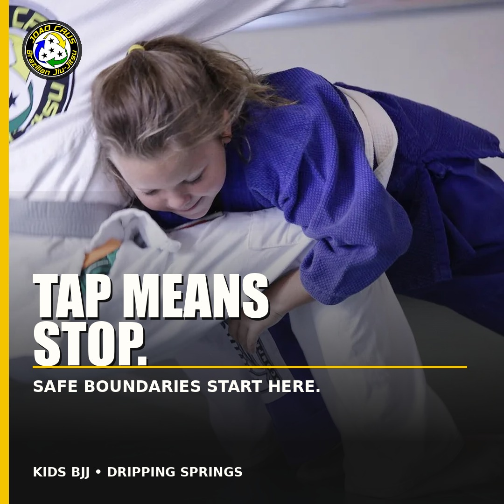

1. Boundary Practice
Primary text
One of the first lessons in Jiu-Jitsu is not how to win. It is how to communicate and respect a boundary. At Joao Crus BJJ, children practice tapping, stopping when a partner taps, resetting and trying again in a coached environment. Tell us their age and preferred location. We’ll recommend an appropriate starting point.
Headline
Tap Means Stop
Description
Safe, coached first steps